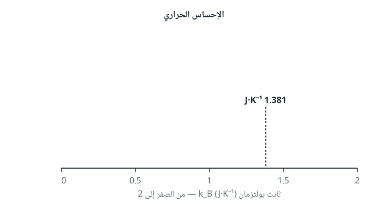

الراحة الحرارية
Thermal comfort
الراحة الحرارية حالة رضا عن البيئة الحرارية، تُقاس بمؤشر PMV ودرجة عدم الرضا PPD. تعتمد على ستة عوامل: الحرارة والإشعاع والرطوبة والهواء واللباس والنشاط.
الراحة الحرارية هي الحالة الذهنية التي يعبّر فيها الإنسان عن رضاه عن البيئة الحرارية المحيطة به. وهي حالة ذاتية لا تُقاس بمقياس حرارة وحده، لأن الجسم يتبادل الحرارة بالإشعاع والحمل والتوصيل والتبخير في وقت واحد. وتُوصف البيئة الحرارية بمؤشر التصويت المتوسط المتوقع PMV، وهو مقياس من سبع درجات بين −3 (بارد جداً) و+3 (حار جداً) والصفر هو الحياد الحراري، وبمؤشر نسبة عدم الرضا المتوقعة PPD الذي يربط بالـPMV. وتعتمد الراحة على ستة عوامل: درجة حرارة الهواء، ومتوسط حرارة الأسطح المشعّة، ورطوبة الهواء، وسرعة الهواء، ومقاومة اللباس الحرارية بوحدة الكلو، ومعدل الأيض بوحدة المِت. مثال: بيئة عند 24 °م ورطوبة 50% وسرعة هواء 0.1 m/s لشخص جالس بلباس 0.5 كلو تعطي PMV قريباً من الصفر، أي حياداً حرارياً.
كيف تعمل الظاهرة؟
جسم الإنسان ينتج حرارة بمعدل الأيض، ويتبادلها مع البيئة بأربعة مسارات: الإشعاع إلى الأسطح المحيطة، والحمل إلى الهواء المتحرك، والتوصيل إلى الأسطح الملامسة، والتبخير بالعرق والتنفس. والتوازن بين الإنتاج والفقد يحدد الإحساس الحراري. فحين تزيد الأسطح المحيطة سخونة أو يزيد العرق، يتغير الإحساس. والدماغ ينظّم ذلك بتوسيع الأوعية الدموية أو تضييقها وبالتعرق والارتجاف. والراحة تحدث حين لا يحتاج الجسم إلى إجهاد تنظيمي كبير، أي حين يكون الفقد مساوياً للإنتاج بلا تعرق ملحوظ ولا ارتجاف.
العلاقة بالأرقام
PMV من −3 إلى +3، وPPD = 100 − 95·exp(−(0.03353·PMV⁴ + 0.2179·PMV²)). ومقاومة اللباس بالكلو: 1 clo = 0.155 m²·K/W. ومعدل الأيض بالمِت: 1 met = 58.15 W/m². والفقد بالإشعاع q = ε·σ·A·(T_skin⁴ − T_surr⁴). مثال: شخص جالس 1.2 met = 69.8 W/m²، ومساحة جسمه 1.8 m²، فإنتاجه نحو 126 W. وبلباس 0.5 clo = 0.0775 m²·K/W.
مفاهيم متقاربة
الراحة ليست الحياد: الحياد توازن حراري، والراحة رضا ذاتي. وPMV مؤشر متوسط لمجموعة، والراحة فردية. والكلو ليس الواط: الكلو مقاومة حرارية للباس، والواط قدرة. والمِت ليس الواط: المِت معدل أيض لكل مساحة جسم. والرطوبة النسبية عامل واحد من ستة، فلا تُستعمل وحدها. والتكييف وسيلة لا هدف، ولا يعني أن كل بيئة مكيّفة مريحة.
حدود التطبيق
PMV مبني على دراسات مجموعات سكانية معتدلة المناخ، وقد يقلّ دقته في المناخات الحارة أو الرطبة أو للأطفال والمسنين. ولا يُستعمل PMV في البيئات غير المتجانسة حرارياً كتلك التي فيها تدفق هواء موضعي أو أسطح مشعّة قوية. وفي الأماكن المفتوحة لا يبقى النموذج صالحاً. والراحة لا تُقاس بمقياس واحد، فقياس حرارة الغرفة وحده لا يكفي. والراحة الحرارية لا تعني جودة الهواء الداخلي، وهما معياران مختلفان.

| الكمية | القيمة | المصدر |
|---|---|---|
| ضغط البخار المشبع للماء عند 100 °م | 0.101 42 MPa | [3] |
المصادر
- 1 The International System of Units (SI), 9th edition (2019) — BIPM — Bureau International des Poids et Mesures (2019). www.bipm.org/en/publications/si-brochure · اطُّلع عليه 2026-11-21
- 2 CODATA Value: Stefan-Boltzmann constant — NIST — CODATA 2022 recommended values (2024). physics.nist.gov/cgi-bin/cuu/Value?sigma · اطُّلع عليه 2026-11-21
- 3 NISTIR 5078: Thermodynamic Properties of Water — Tabulation from the IAPWS Formulation 1995 — NIST — National Institute of Standards and Technology (1998). nvlpubs.nist.gov/nistpubs/Legacy/IR/nistir5078.pdf · اطُّلع عليه 2026-11-21
استشهد بهذا المصطلح
الصيغتان مبنيتان من بيانات الصفحة نفسها: العنوان والتاريخ ورابط النسخة المنشورة.
الراحة الحرارية — Thermal comfort. (2026). ديوان المعرفة — انفراد. https://infiradev.com/diwan/terms/term-thermal-comfort.html
@misc{term-thermal-comfort2026,
title = {الراحة الحرارية},
titleaddon = {Thermal comfort},
howpublished = {{ديوان المعرفة — انفراد} — مرجع علمي عربي},
year = {2026},
url = {https://infiradev.com/diwan/terms/term-thermal-comfort.html},
urldate = {2026-11-26},
note = {مراجعة علمية: hermes (مراجعة معتمدة 2026-11-26)}
}
راجعه: hermes (مراجعة معتمدة 2026-11-26) · 2026-11-26 · آخر تحديث 2026-11-21